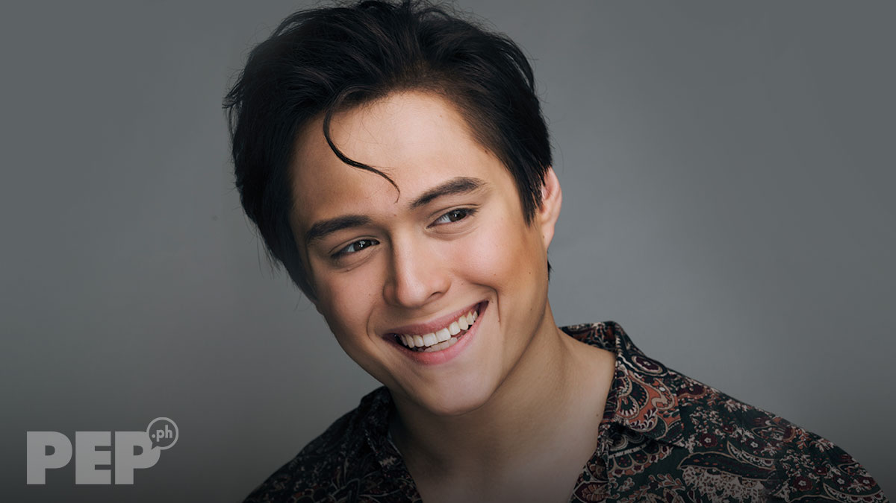

Biology
Enrique Mary Bacay Gil V is a ‘RAWR’ award-winning Filipino actor, singer, and dancer, known for his portrayal of ‘Alexander ‘Xander’ Grande III’ in the TV series, ‘Forevermore.’ His other popular films and TV shows are ‘Budoy,’ ‘She’s The One,’ ‘Muling Bukson Ang Puso,’ ‘Dukot,’ ‘Dolce Amore,’ among many others. He was born and raised in Cebu City, Philippines. After his school education, he joined college to study Information Technology, but dropped-out to pursue a career in modeling, and acting. He joined the institute, ‘Trumpets,’ to train for a career in commercial modeling and musical theater. Gil began his career with TV commercials and soon received roles in TV series and films. In 2013, he released a dance album, ‘King of the Gil.’ He has appeared in lead roles in a number of successful romantic drama series and movies, such as ‘Just the Way You Are,’ ‘Everyday I Love you,’ and ‘My Ex and Whys,’ among others. Gil has received many prestigious awards, including the ‘Most Promising Male Star of the Year (2014)’ from the ‘GMMS Foundation.
Career
- In the summer of 2008, Gil joined ‘Trumpets,’ an institute for commercial modeling and musical theater workshops. He initially received assignments for modeling in TV commercials. He was noticed in his ‘Lewis & Pearl’s’ ad with actor Coleen Garcia. He also appeared as one of the eco-models in the drama series, ‘I Love Betty La Fea.’ The ‘ABS-CBN’ channel offered him to attend workshops under their management. Later, he got to play the role of ‘Harold’ in the ‘ABS-CBN’s’ action-drama series, ‘Pieta’ (2008 - 2009.)
- During this period, his mother persuaded Gil to audition for the sitcom, ‘George and Cecil,’ and he was immediately signed on for the series. Later, he portrayed the role of the brother of lead actor, Kristel Moreno, in an indie film, ‘Pitas’ (2010).
- During this period, his mother persuaded Gil to audition for the sitcom, ‘George and Cecil,’ and he was immediately signed on for the series. Later, he portrayed the role of the brother of lead actor, Kristel Moreno, in an indie film, ‘Pitas’ (2010).
- Gil received an important break in the 2011 remake of ‘Mula Sa Puso,’ where he portrayed the role of ‘Michael Miranda’ (originally played by Diether Ocampo). In the 2011 teen dance-musical drama ‘Good Vibes,’ he essayed the part of ‘Troy Cabrera.’ He worked with debutants Kathryn Bernardo and Julia Montes in the Star Cinema’s 2011 release, ‘Way Back Home.’ He appeared as ‘BJ Maniego’ in the 2011’s TV drama series ‘Budoy.’
- In the 2012 teen TV drama, ‘Princess and I,’ Gil co-starred with Kathryn Bernardo in the role of ‘Dasho Jao Rinpoche.’ In the same year, he also starred in the teen romantic-comedy film, ‘The Reunion’ and a horror-drama film, ‘Amorosa,’ his first horror-film. He worked in another horror-adventure movie, ‘The Strangers,’ which was one of the official entries for the ‘38th Metro Manila Film Festival.
Personal Life
- In 2010-2011, Gil dated actor Coleen Garcia, his co-star of ‘Good Vibes.’ Presently, he is in a romantic relationship with Liza Soberano.
- Gil is a member of PETA and actively participated in the 2013’s ‘Free Mali’ campaign, which was organized to help transfer the captive elephant ‘Mali’ from Manila Zoo to ‘Boon Lott’s Elephant Sanctuary’ in Thailand.